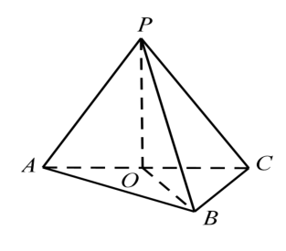
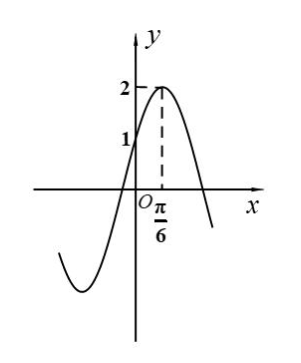

第 1 题
题面依据闵行一模可读卷第1页补录；答案沿用原转录。
已知全集 ，集合 ，则 ________。
展开答案与解析
第 2 题
不等式 的解集为________。
展开答案与解析
第 3 题
若虚数 的实部为 ，虚部为正数，且 ，则 ________。
展开答案与解析
第 4 题
的二项展开式中 项的系数为________。
展开答案与解析
第 5 题
某公司有 名员工，其中有一般人员 人，管理人员 人，专业技术人员 人，现用分层抽样的方法抽取 人，以调查大家对职业培训的意愿，则应抽取的专业技术人员的人数是________。
展开答案与解析
第 6 题
过点 的直线被圆 截得的最短弦长为________。
展开答案与解析
第 7 题
若圆锥的轴截面为等腰直角三角形，则其侧面展开图扇形圆心角的弧度数为________。
展开答案与解析
第 8 题
已知 是等比数列，若 、 是函数 的两个零点，则 ________。
展开答案与解析
第 9 题
若点P是边长为 1 的正三角形ABC外接圆上的一点，则 的最大值为
展开答案与解析
第 10 题
某校的 5 位老师甲、乙、丙、丁、戊排成一排照相，其中甲、乙必须相邻，且甲不站在两端，
则不同的排法种数为
展开答案与解析
第 11 题
草坪上有一个带有围栏的边长为 的正三角形活动区域 ，点 在边 上，且 ，小闵同学在该区域玩耍，他在 处放置了一个手电筒，若手电筒发出的光线张角（任两条光线的最大夹角）为 ，则手电筒在 内部所能照射到的地面的最大面积为________ 。
展开答案与解析
第 12 题
已知集合 ，。如果存在 ，对属于 且不属于任意 的所有元素 ，都有 成立，则 的取值范围是________。
展开答案与解析
第 13 题
抛物线 的准线方程为（ ）。
- A.
- B.
- C.
- D.
展开答案与解析
第 14 题
已知 ，则“”是“”成立的（ ）。
- A. 充分不必要条件
- B. 必要不充分条件
- C. 充要条件
- D. 既不充分也不必要条件
展开答案与解析
第 15 题
从等差数列 中取出若干数字按先后顺序构成数列 。第一次取出数字“”，然后从取出的“”开始往后数 个数，再取出数到 的数字“”，……，以此类推，如果某次取出的是数字“”，则下一次从取出的“”开始往后数 个数，再取出数到 的数字“”；当往后数的数字个数小于“”时，结束取数。那么 的最后一项是（ ）。
- A.
- B.
- C.
- D.
展开答案与解析
第 16 题
如果“若 ，则 ”和“若 ，则 ”中有且仅有一个真命题，称 与 具有“-关系”。已知函数 的定义域为 ，： 为偶函数，则 与下列选项中的 具有“-关系”的为（ ）。
- A. ：对任意 都有
- B. ：对任意 都有
- C. ：对任意 都有
- D. ：对任意 都有
展开答案与解析
第 17 题
如图，三棱锥 中，侧面 与底面 都是以 为斜边的等腰直角三角形， 为 中点。
（1）求证：；
（2）若 ，求二面角 的大小。

展开答案与解析
第 18 题
已知函数 ，（），其部分图像如图所示。
（1）求 的解析式；
（2）在 中， 分别是角 的对边，若 ， 成等差数列，判断 的形状。

展开答案与解析
第 19 题
（本题满分 14 分）本题共有 3 个小题，第 1 小题 4 分，第 2 小题 4 分，第 3 小题 6 分小闵同学某一天进行了 10 次 100 米短跑集训，其中上午进行了 6 次，下午进行了 4 次；如下是他上午集训 6 次的
成绩（单位：s）：13.7 、13.9 、14.9 、15.3、12.9 、13.3. （1）求这 6 次成绩的中位数；（2）参考这一天上午
集训的数据，用经验概率估计概率，求该同学训练 100 米短跑 3 次至少有一次用时小于 13s的概率；（3）若该同学
下午 4 次的集训原始成绩记录丢失，但记得这 4 次的平均成绩是 14.25s，方差是 0.75，求他这一天 10 次训练成绩的
平均值和方差.
展开答案与解析
第 20 题
已知双曲线 ，直线 过点 ，，且与 的右支交于 两点，与 的两条渐近线分别交于 两点，其中 在第一象限， 在第四象限。
（1）求 的两条渐近线的夹角；
（2）若 为 的右焦点，求 的面积的最小值；
（3）若 ，求 的取值范围。
展开答案与解析
第 21 题
已知函数 的定义域为 ，对于 ，若 ，且 ，则称 为 的一个“M点”，记 为 的所有“M点”构成的集合。
（1）若 分别判断 与 是否正确；
（2）证明：“”的一个充要条件为“当 时，”；
（3）已知 ，，其中 ，记 ，。若 ，求 的取值范围。